راهنمای کامل کاربری
سامانهٔ هوشمند اتوماسیون اداری و بازرگانی هورمند
برای کارمندان، مدیرعامل و مدیر سیستم
هورمند یک سامانهٔ فارسی برای کارهای روزانهٔ شرکت است: فایل و نامه، مشتری و فروش، وظایف، گارانتی و پشتیبانی در یک جا. این راهنما هر بخش را قدمبهقدم توضیح میدهد.
| شما | کجا را بخوانید |
|---|---|
| کارمند یا همکار | فصلهای ۲ تا ۹ (کار روزانه) و ۱۲ (گوشی) |
| مدیرعامل (صاحب امضا) | فصل ۴ (امضای نامه و تأیید پیشفاکتور) و فصل ۱۰ (گزارشات) |
| مدیر سیستم | فصل ۱۱ (کنسول مدیریت) و فصل ۱۳ (نکتههای نگهداری) |
| منو | برای چه کاری است |
|---|---|
| امور اداری | فرستادن و گرفتن فایل، گفتگو با همکاران، درخواست مرخصی، تابلو اعلانات |
| نامه | نوشتن نامهٔ رسمی، شمارهگذاری، ارجاع و امضا |
| مشتریان | پروندهٔ مشتری، فرصتهای فروش، پیگیریها، پیشفاکتور، پیامک |
| گارانتی | ثبت گارانتی کالا، درخواست خرابی، گواهی چاپی |
| پشتیبانی | پلنها، اشتراک مشتریان، درخواستهای پشتیبانی |
| گزارشات | نمودار و آمار فروش، تماسها، وظایف، گارانتی و پشتیبانی |
| وظایف | تعریف و واگذاری وظیفه و گزارش روزانه |
| پنل مدیریت | کنسول تنظیمات سامانه (فقط برای مدیران) |
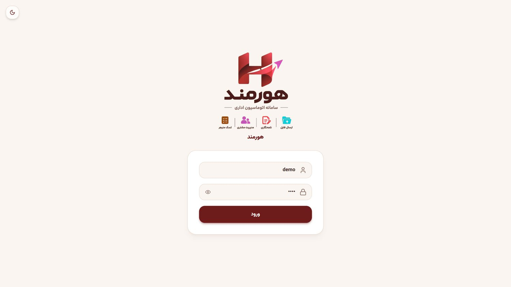
| دکمه | کار آن |
|---|---|
| آیکون تلفن | سوابق تماسها و گرفتن تماس |
| زنگوله | فهرست اعلانها (تعداد خواندهنشدهها روی آن میآید) |
| ماه / خورشید | تغییر حالت روز و شب |
| رنگبندی | انتخاب رنگ ظاهر سامانه؛ همینکه یک رنگ را بزنید اعمال میشود |
| پنل مدیریت | ورود به کنسول مدیریت (برای مدیران) |
| آیکون کلید | تغییر رمز عبور خودتان |
| آیکون خروج | خروج از سامانه |
وقتی کاری به شما میرسد (فایل، نامه، وظیفه، تماس، پیگیری و…) هم پنجرهٔ کوچکی گوشهٔ صفحه میآید و هم در فهرست زنگوله ثبت میشود. اگر صدا یا پاپآپ را نمیخواهید، مدیر از «تنظیمات سیستم ← ناتیفیکیشن و صدا» آن را تنظیم میکند.
این منو پنج زیربخش دارد: ارسال و دریافت فایل، گفتگو، درخواست مرخصی، تابلو اعلانات و یادآور.
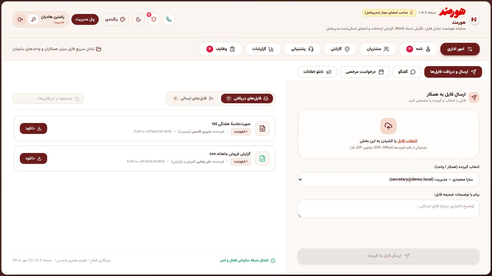
فایلهایی که برایتان فرستادهاند در «فایلهای دریافتی» هستند و با دکمهٔ «دانلود» گرفته میشوند. «فایلهای ارسالی» هم فهرست چیزهایی است که خودتان فرستادهاید.
گفتگو برای پیامهای کوتاه با همکاران است. همکار را از فهرست انتخاب کنید و پیام بنویسید. پیام تازه با شمارش روی تب «گفتگو» و اعلان نشان داده میشود.
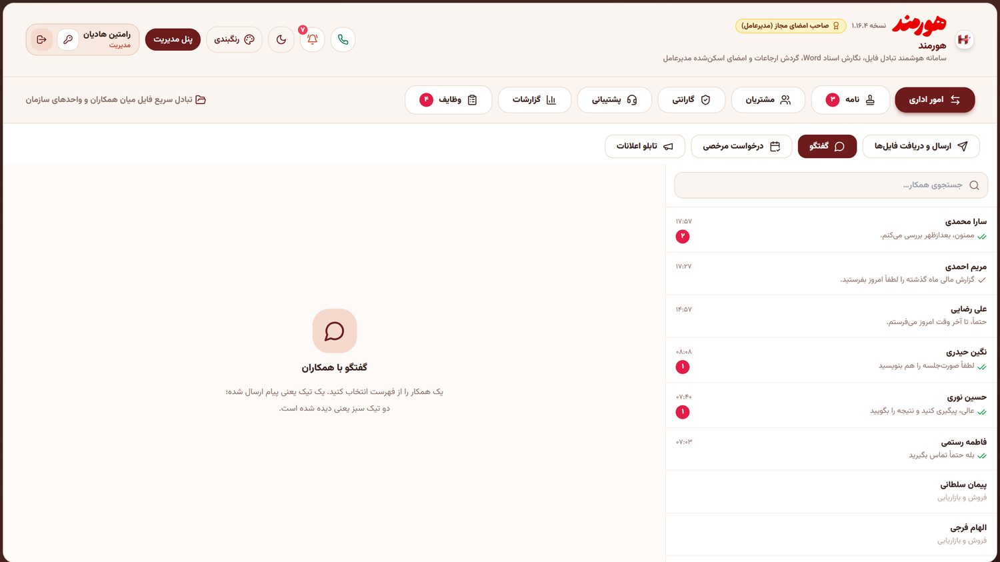
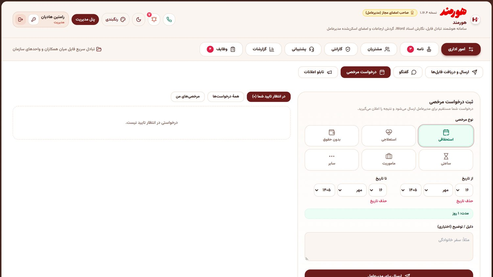
سه تب بالای فهرست هست: «در انتظار تأیید شما» (برای مدیری که باید تصمیم بگیرد)، «همهٔ درخواستها» و «مرخصیهای من».
تابلو برای خبرهایی است که باید همه ببینند. کاربری که مجوز دارد با «اعلان تازه» خبر مینویسد و برای همه نمایش داده میشود.
هر همکار برای خودش یادآور میسازد؛ فقط خودش آن را میبیند. در زمان تعیینشده یک پنجرهٔ بزرگ وسط صفحه باز میشود، زنگ میزند و تا جواب ندهید نمیماند.

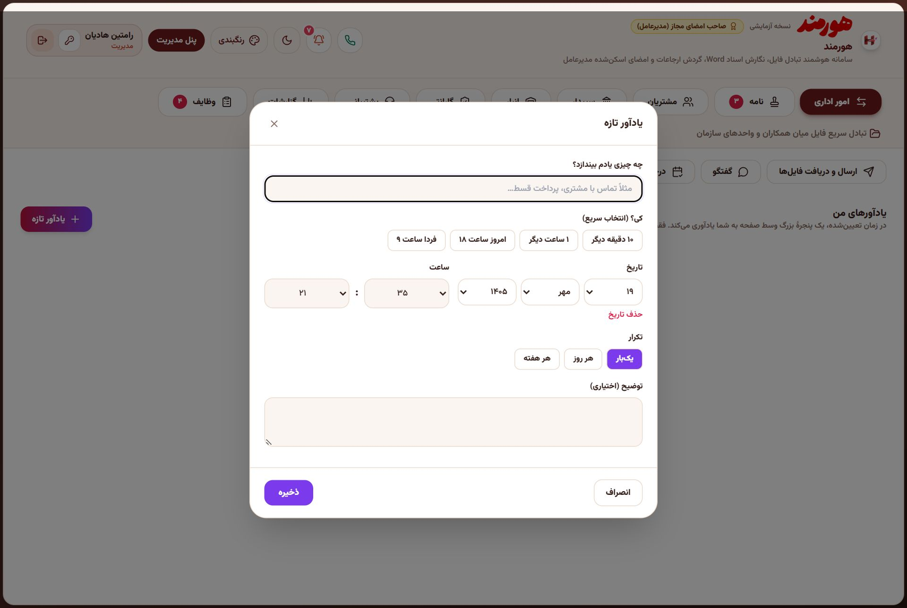
در منوی «نامه»، نامهٔ رسمی مینویسید، شماره میگیرد، برای همکاران ارجاع میشود و صاحب امضا آن را امضا میکند.
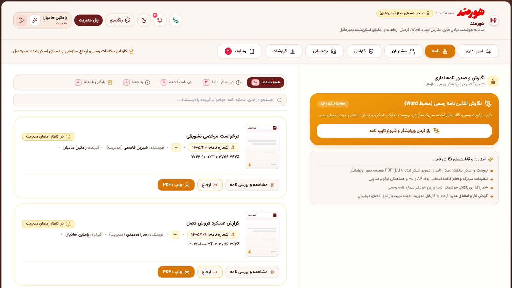
| وضعیت | معنی |
|---|---|
| در انتظار امضا | نامه نوشته شده و منتظر امضای صاحب امضای مجاز است |
| امضا شده | نامه با مهر و امضا تأیید شده است |
| رد شده | صاحب امضا نامه را برگرداند (دلیل را مینویسد) |
| بایگانی | نامههای تمامشده |
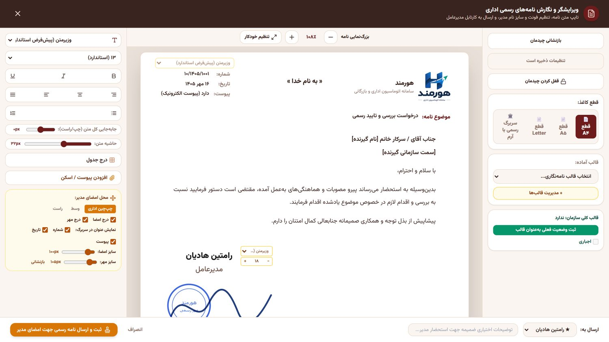
اینجا همهٔ کار فروش است: پروندهٔ مشتری، فرصتهای فروش، پیگیریها و پیشفاکتور.
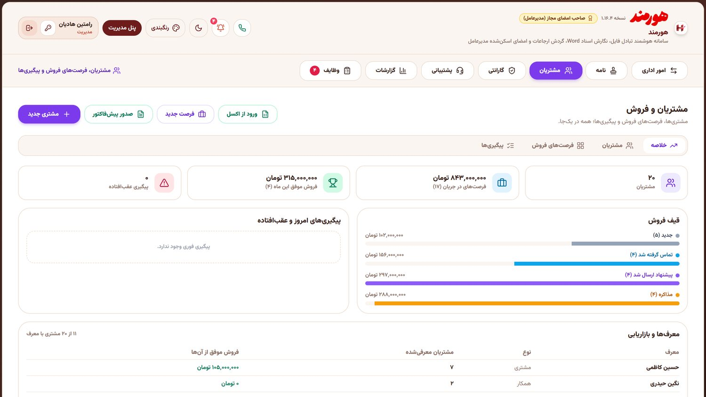
| زیربخش | برای چه کاری |
|---|---|
| گزارشها | خریداران در هر بازه، تعاملها، قیمتهای دادهشده، مشتریان بیپیگیری و نیاز مشتریان |
| خلاصه | نگاه کلی: شمار مشتریان، ارزش فرصتهای باز، فروش ماه، پیگیری عقبافتاده و قیف فروش |
| مشتریان | فهرست مشتریها، جستجو و پرونده |
| فرصتهای فروش | فرصتها روی تابلو؛ از «جدید» تا «فروش موفق» |
| پیگیریها | کارهای تماس و پیگیری با مشتری و موعدشان |
با کلیک روی هر مشتری، پروندهٔ او باز میشود: تلفنها، سابقهٔ تماسهای تلفنی، پیگیریها، فرصتها، گارانتیها و درخواستهای پشتیبانی. همهٔ تاریخچهٔ آن مشتری یکجا دیده میشود.
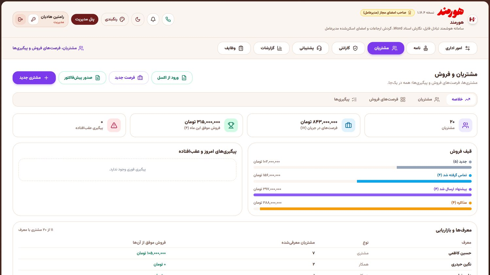
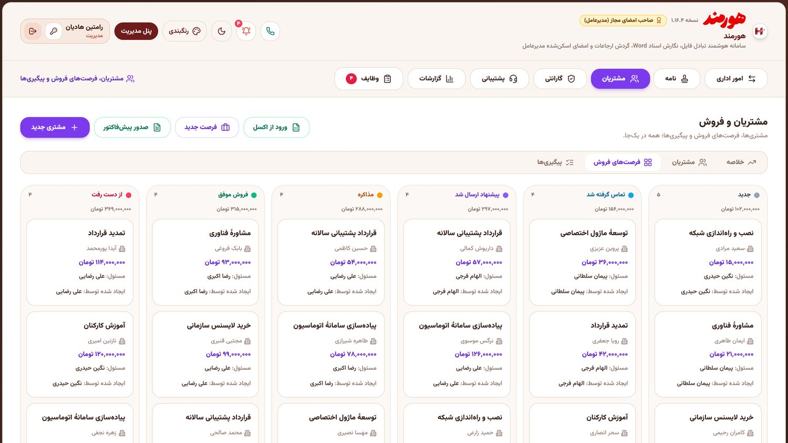
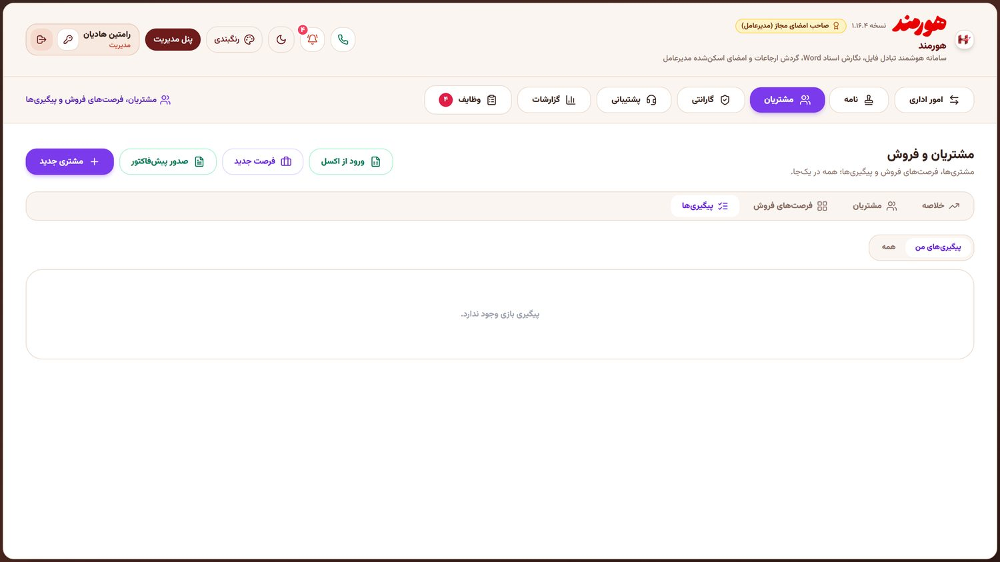
برای هر مشتری میتوانید یک پیگیری (تماس، جلسه، ارسال پیشنهاد و…) با موعد بگذارید. پیگیریهای امروز و عقبافتاده در صفحهٔ «خلاصه» دیده میشوند و یادآوری هم میرسد.
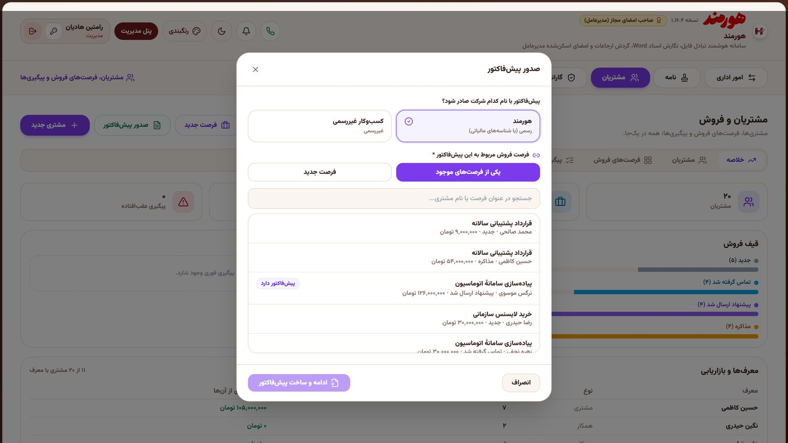
اگر مشتری کالایی خواست که موجود نیست، آن را در پروندهٔ مشتری ثبت کنید. این ثبتها در گزارشات جمع میشوند تا بدانید چه کالایی بیشتر خواسته میشود.
در «مشتری جدید» نوع مشتری را انتخاب کنید. هر نوع فیلدهای خودش را دارد: شخص حقیقی (نام، کد ملی، تاریخ تولد)، شرکت (نام شرکت، شناسهٔ ملی، کد اقتصادی، نماینده) و فروشگاه (نام فروشگاه، نوع فعالیت، شمارهٔ پروانهٔ کسب و مشخصات مالک).
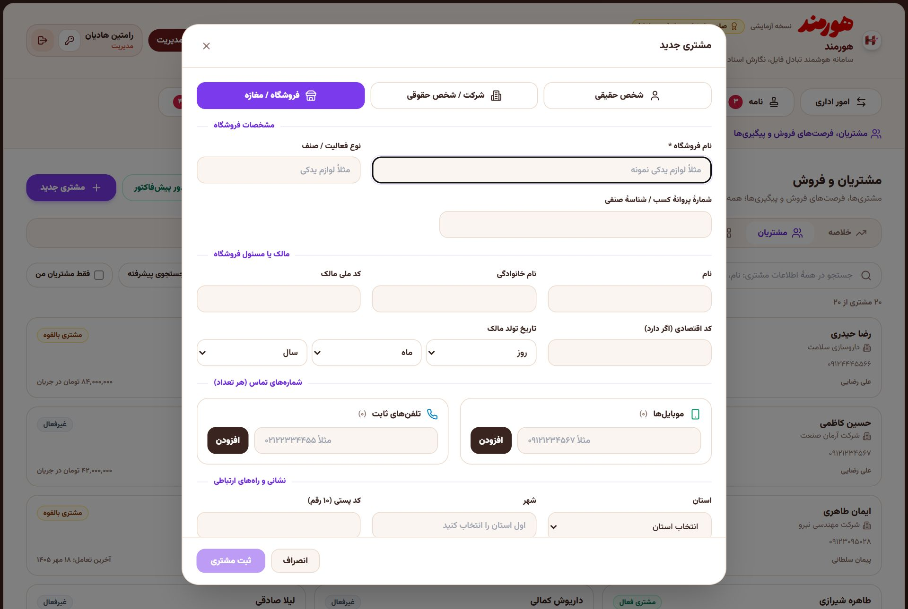
زیر کادر توضیحات و یادداشت، جملههایی که قبلاً بیشتر تایپ شده با یک کلیک اضافه میشود تا هر بار تایپ نکنید. اگر هنوز نوشتهای نیست، چند جملهٔ عمومی پیشنهاد میشود.
جستجو در همهٔ اطلاعاتی که برای مشتری ذخیره شده انجام میشود: نام، شماره (با هر شکل نوشتن)، شهر، کالا، یادداشت، قیمتها و برچسب. ارقام فارسی و لاتین یکی حساب میشود.
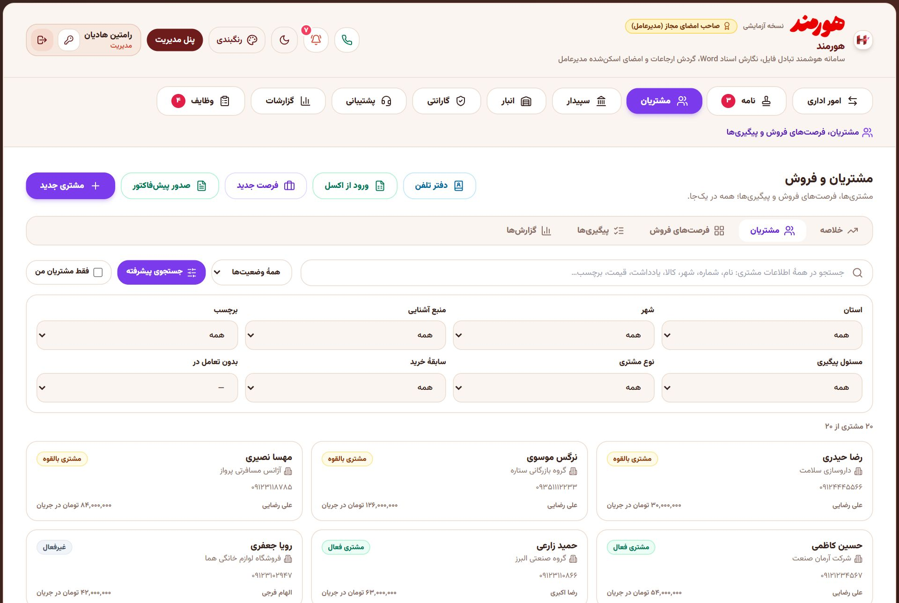
دکمهٔ «دفتر تلفن» همهٔ شمارههای همهٔ مشتریها را با نوع (موبایل، ثابت، فکس)، نام و شهر در یک فهرست نشان میدهد؛ با جستجو، فیلتر نوع، تماس با یک کلیک، کپی شماره و خروجی اکسل.
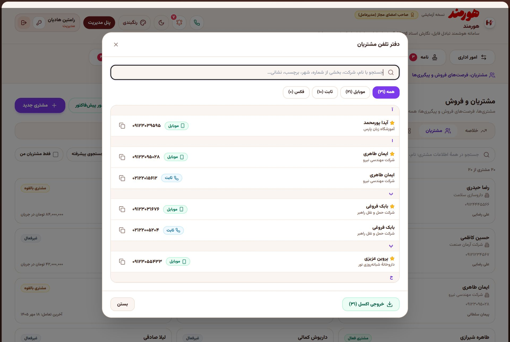
وقتی مشتری فقط قیمت میخواهد و پیشفاکتور لازم نیست، در پروندهٔ او «قیمت داده شد» را بزنید. کالا را از انبار جستجو میکنید (موجودی و قیمتهای کالا دیده میشود)، مشخصات و تعداد را مینویسید و قیمتی که شرکت داد (و اگر خواست قیمت مورد نظر مشتری) را ثبت میکنید. نام کارمند و ساعت ثبت هم همراهش میماند.
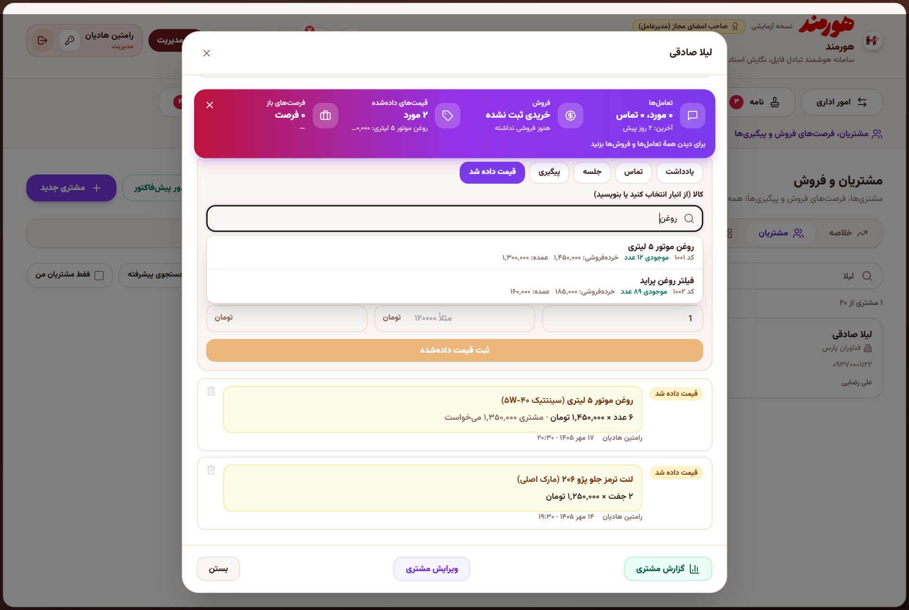
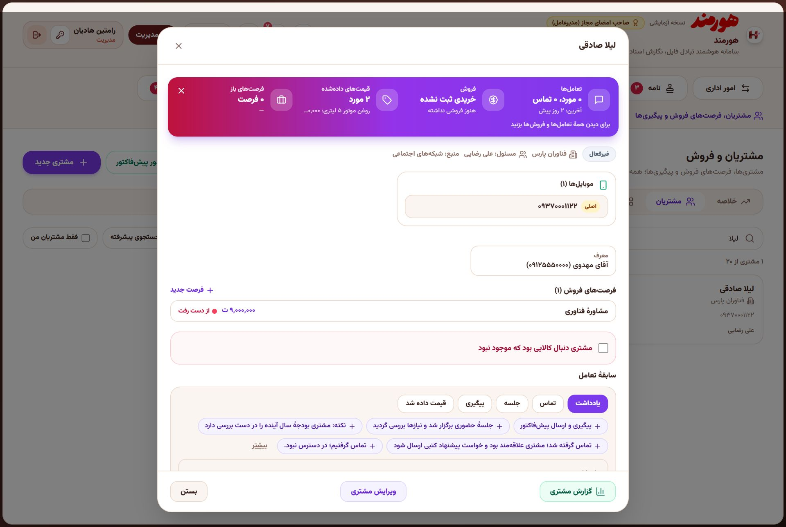
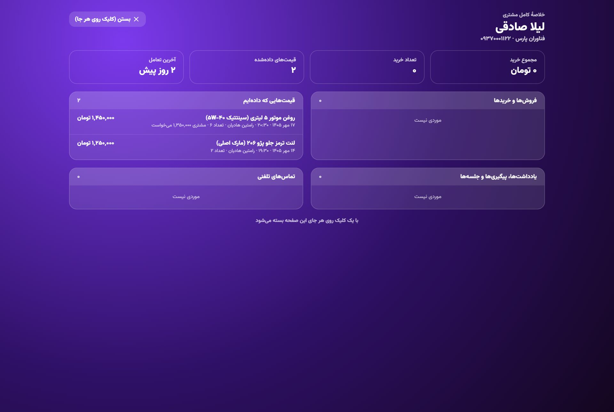

زبانهٔ «گزارشها» در منوی مشتریان گزارشهای حرفهای دارد، همه با جستجوی پیشرفته، فیلتر بازهٔ زمانی و کارمند، و خروجی اکسل:
| گزارش | چه چیزی را نشان میدهد |
|---|---|
| خریداران در بازه | چه مشتریهایی در بازهٔ دلخواه خرید کردهاند (و برعکس: چه کسانی نخریدهاند)، با مبلغ، تعداد و آخرین خرید |
| تعاملها و کارها | یادداشت، تماس، جلسه و پیگیری به تفکیک نوع و کارمند |
| قیمتهای دادهشده | چه کالایی، با چه قیمتی، به چه کسی و توسط کدام کارمند؛ با میانگین قیمت هر کالا |
| مشتریان بیپیگیری | مشتریهایی که مدتی تعامل یا خریدی نداشتهاند |
| نیاز مشتریان | کالایی که مشتری دنبالش است و کالاهای ناموجودی که خواسته |
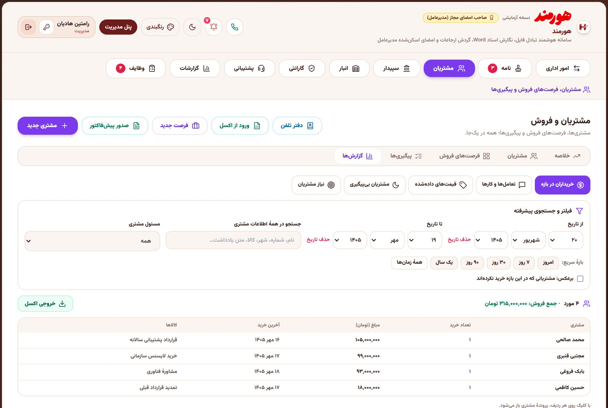
اگر پنل پیامک تنظیم شده باشد، از پروندهٔ مشتری میتوانید پیامک بفرستید. زیر هر پیامک، خط پایانی تعیینشده (نشانی سایت یا نام شرکت) خودکار نوشته میشود.
هورمند به تلفنخانهٔ شرکت (ایزابل) وصل میشود تا تماسها در سامانه دیده شوند.
وقتی مشتری به داخلی شما زنگ میزند، پنجرهای گوشهٔ صفحه میآید و نام مشتری یا شمارهٔ تماسگیرنده را نشان میدهد.
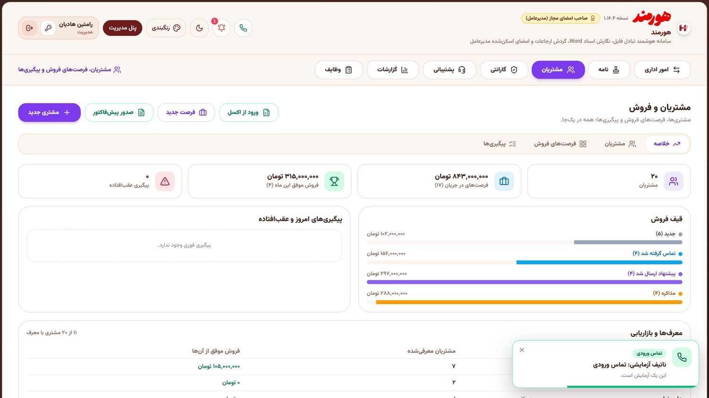
با آیکون تلفن بالای صفحه، فهرست تماسها باز میشود: ورودی، خروجی، بیپاسخ، با جستجو و فیلتر. کنار هر ردیف میتوانید تماس بگیرید، شماره را بهعنوان مشتری ذخیره کنید یا اگر ضبط شده باشد صدا را گوش دهید.
مدیر در «تنظیمات سیستم ← پیامک» انتخاب میکند چه پیامی خودکار برای مشتری برود. هر مورد دکمهٔ «مشاهده» دارد که متن نمونه را نشان میدهد. متنها ثابتاند و قابل ویرایش نیستند.
| رویداد | چه زمانی پیامک میرود |
|---|---|
| خوشآمدگویی | مشتری تازه با موبایل ثبت شود |
| ثبت درخواست | فرصت فروش تازه ساخته شود |
| صدور پیشفاکتور | پیشفاکتور صادر شود (بعد از تأیید مدیرعامل اگر لازم باشد) |
| سپاس از خرید | فرصت با موفقیت بسته شود |
| ثبت گارانتی | گارانتی تازه ثبت شود |
| حل درخواست پشتیبانی | درخواست «حل شد» شود |
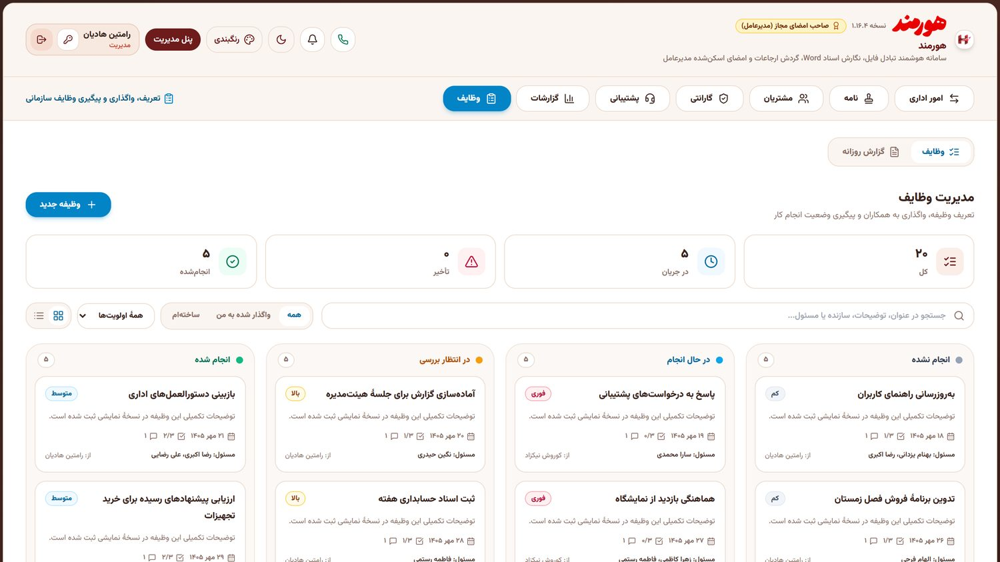
هر همکار میتواند در تب «گزارش روزانه» کار آن روز را بنویسد. مدیر میتواند گزارش همکاران را ببیند.
گارانتی هر کالای فروختهشده با سریال و تاریخ پایان ثبت میشود و درخواست خرابی مرحلهبهمرحله پیگیری میگردد.
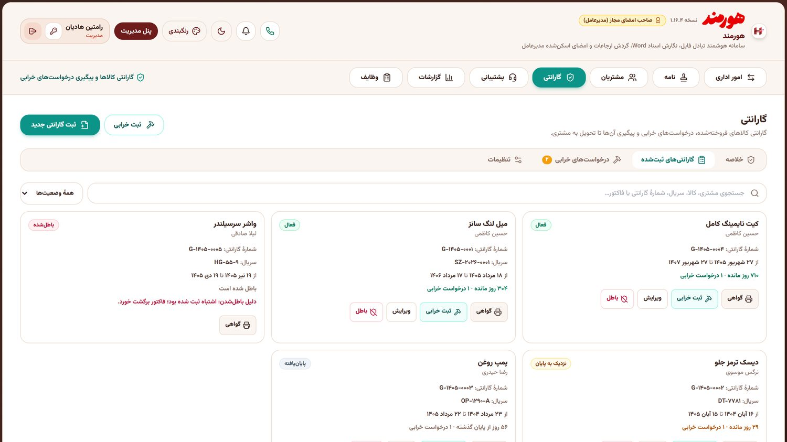
شمارهٔ گارانتی را سامانه میدهد (مثل G-۱۴۰۵-۰۰۰۷). یک سریال فقط یکبار گارانتی میگیرد. گارانتی هیچوقت پاک نمیشود؛ فقط با ذکر دلیل «باطل» میشود.
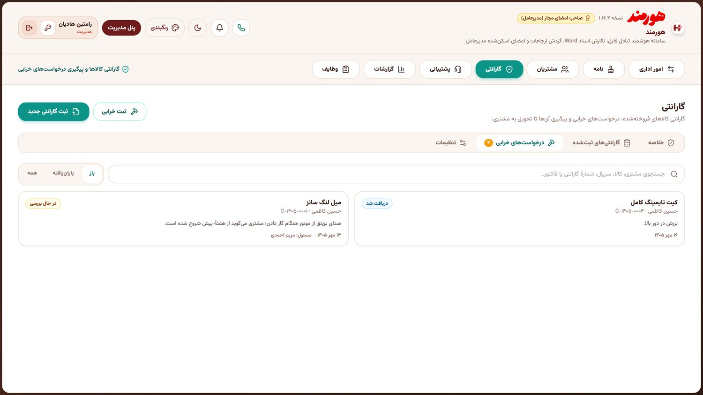
همهٔ مراحل با نام و زمان در تاریخچهٔ درخواست میماند و برای مسئول، صاحب مشتری و ثبتکننده اعلان میرسد.
روی «گواهی» بزنید تا صفحهٔ چاپ باز شود. گواهی با فونت وزیرمتن، همهٔ مشخصات، شرایط گارانتی و جای امضا چاپ میشود. اگر مدیر در «گارانتی ← تنظیمات» نام امضاکننده و تصویر مهر و امضا را گذاشته باشد، مهر و امضای دیجیتال هم دیده میشود. بالای صفحه با تیک «مهر و امضای دیجیتال» میتوانید آن را روشن یا خاموش کنید.
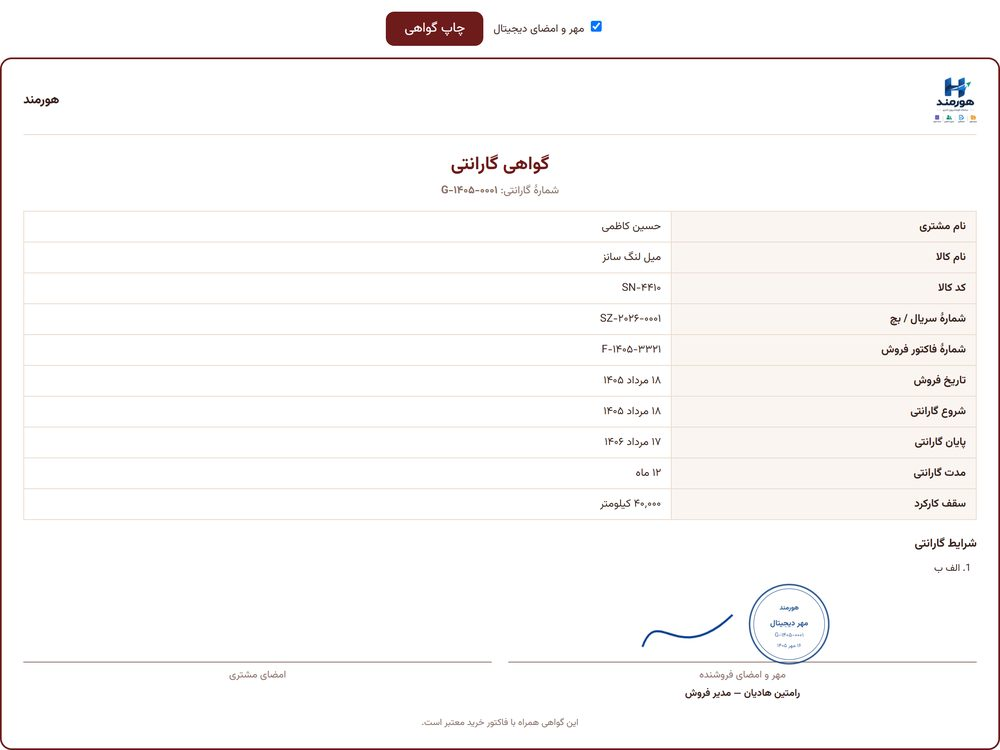
برای مشتریهایی که پلن پشتیبانی دارند: پلن، اشتراک، درخواست با مهلت پاسخ و صفحهٔ مخصوص خود مشتری.
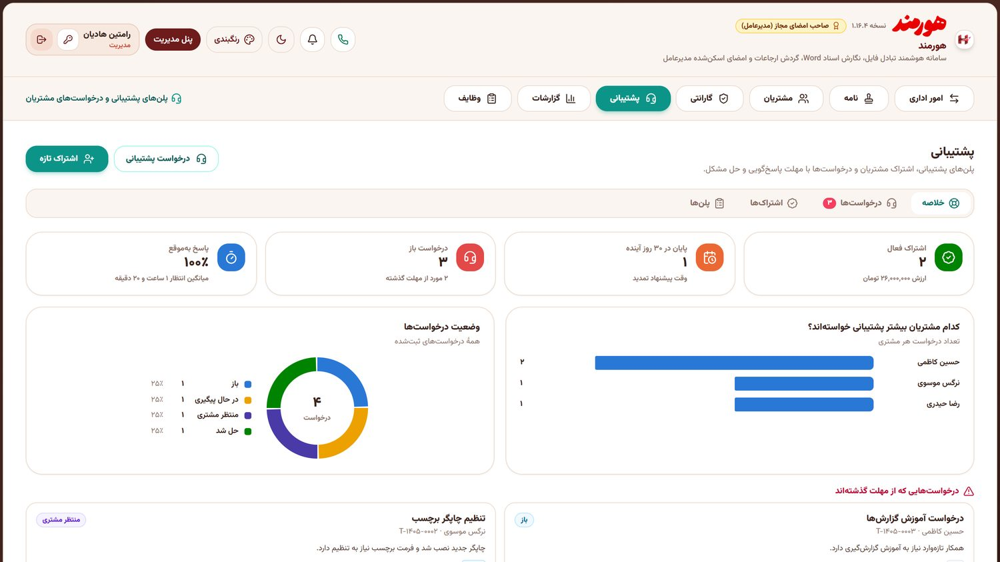
| زبانه | کار آن |
|---|---|
| خلاصه | اشتراکهای فعال، درخواستهای باز، چند درصد بهموقع جواب داده شده، درخواستهای از مهلت گذشته |
| درخواستها | فهرست درخواستهای پشتیبانی با وضعیت، مسئول و مهلت |
| اشتراکها | اشتراک هر مشتری: پلن، تاریخ شروع و پایان، بازدیدهای مصرفشده |
| پلنها | نمایش پلنها (ساخت و ویرایش پلن در کنسول مدیریت است) |
شمارهٔ اشتراک مثل S-۱۴۰۵-۰۰۰۴ است. اشتراک پاک نمیشود؛ با دلیل «لغو» میشود.
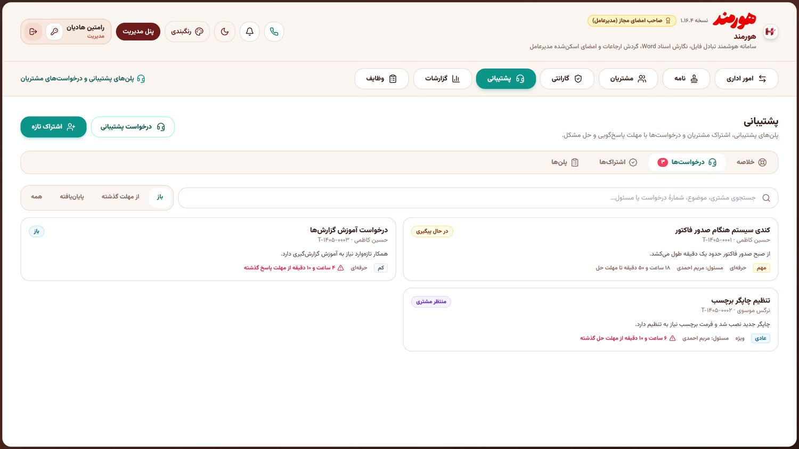
مشتریای که پلن فعال دارد به نشانی /support (در آدرس سامانه) میرود و با شمارهٔ موبایل ثبتشده در پروندهٔ خودش و چهار رقم آخر کد ملی وارد میشود. او مشکلش را مینویسد، پاسخها را میخواند و پیام تازه میفرستد. درخواست مستقیم در منوی «پشتیبانی» شما مینشیند.
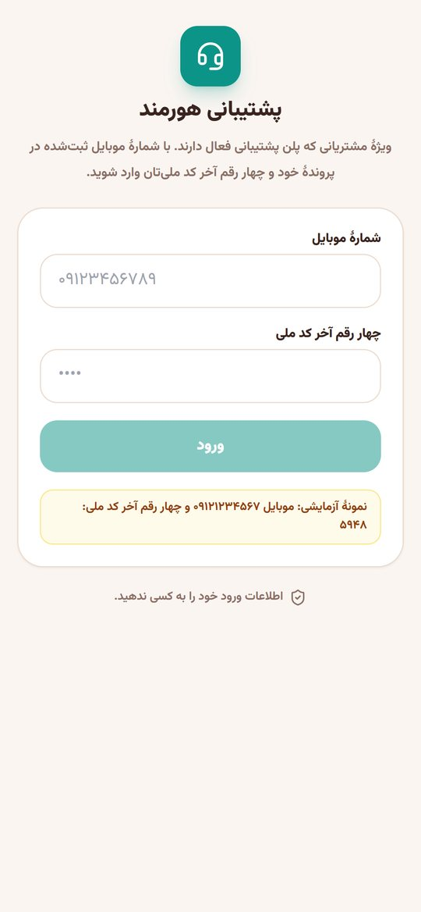
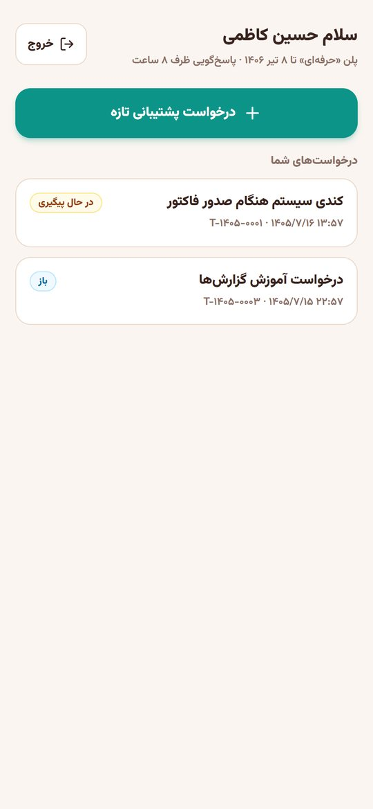
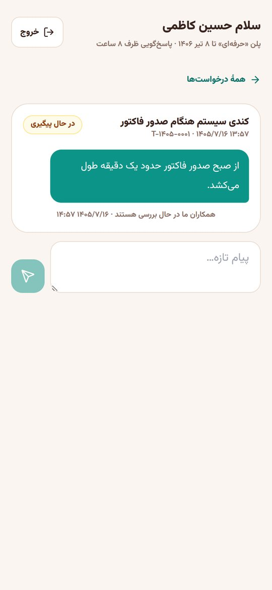
ماژول انبارداری کامل: کالا، انبار، رسید، حواله، انتقال، انبارگردانی و کاردکس. منوی «انبار» برای کسانی است که مدیر به آنها مجوز داده است.
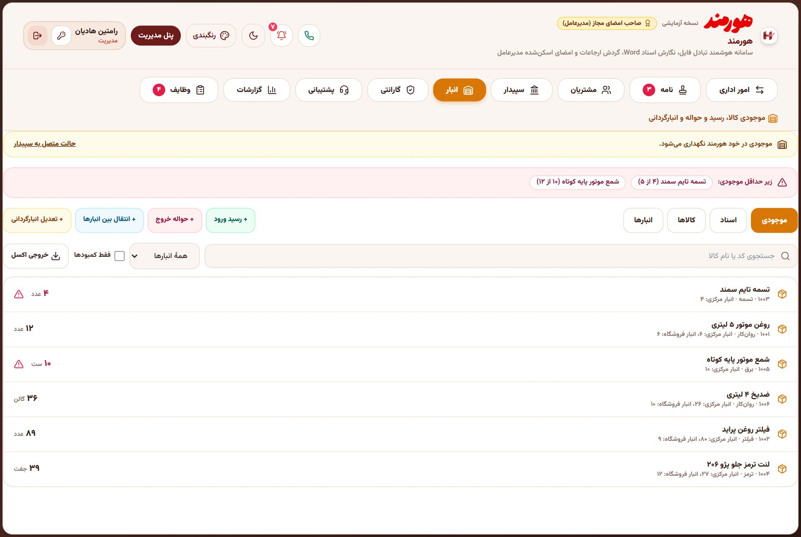
| زبانه | کار آن |
|---|---|
| موجودی | موجودی هر کالا (کل و در هر انبار)، جستجو، فیلتر انبار، «فقط کمبودها» و خروجی اکسل |
| اسناد | همهٔ رسیدها، حوالهها، انتقالها و تعدیلها با فیلتر نوع، انبار و تاریخ |
| کالاها | تعریف کالا: کد، نام، واحد، گروه، بارکد، حداقل موجودی و چند قیمت با عنوان |
| انبارها | تعریف انبارها، محل و انباردار |
| سند | چه میکند |
|---|---|
| رسید ورود | موجودی انبار را زیاد میکند (خرید یا تولید) |
| حوالهٔ خروج | موجودی را کم میکند؛ اجازهٔ منفیشدن موجودی نمیدهد |
| انتقال بین انبارها | کالا را از انباری به انبار دیگر میبرد |
| تعدیل انبارگردانی | عدد شمارششده را مینویسید و سامانه تفاوت را ثبت میکند؛ دلیل لازم است |
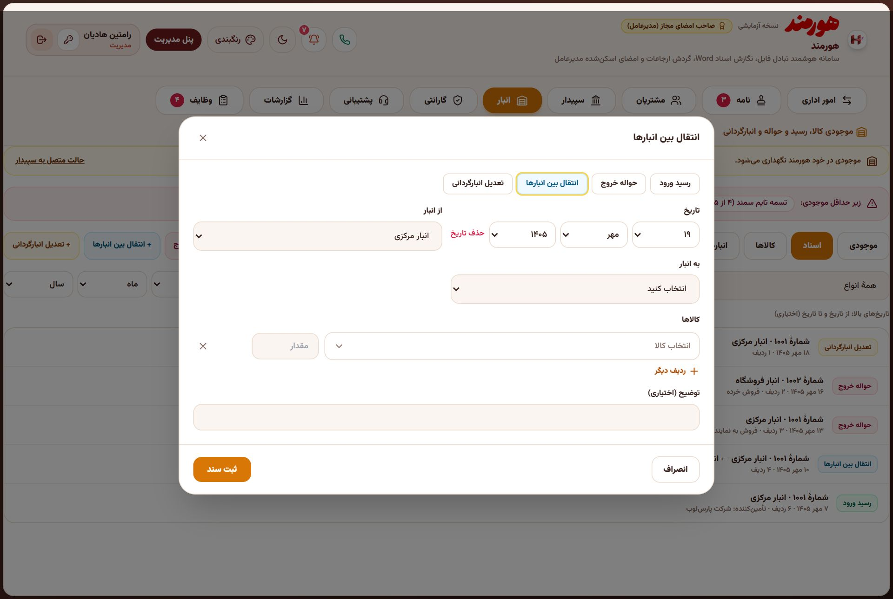
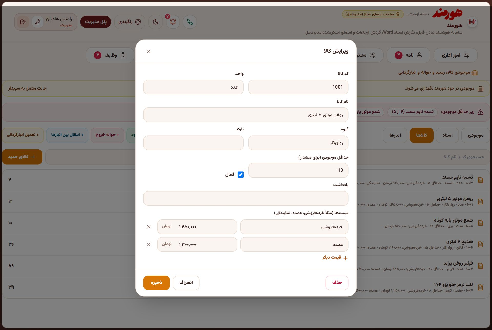
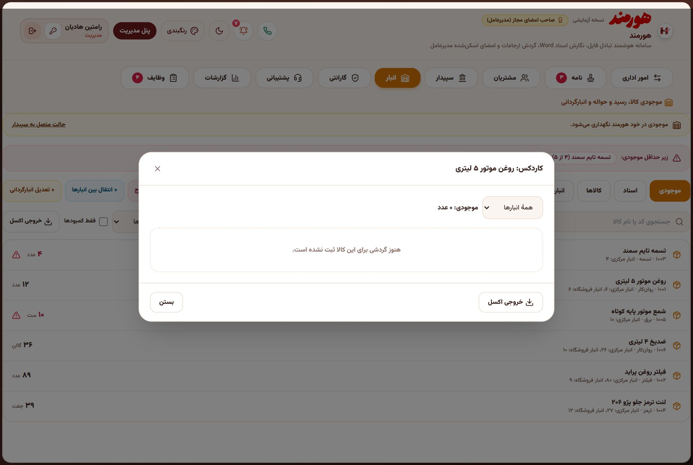
هورمند به نرمافزار حسابداری سپیدار وصل میشود تا هر چیز را دو بار تایپ نکنید: مشتری و پیشفاکتور از هورمند به سپیدار میرود، فاکتور و دریافتی از همانجا ثبت میشود و کالا و موجودی انبار از سپیدار به هورمند میآید.
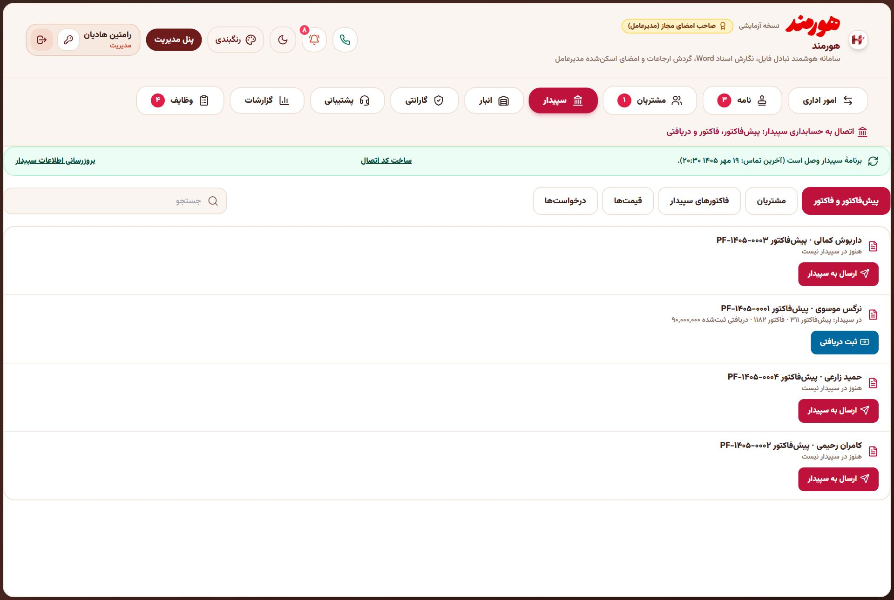
| کار | نتیجه در سپیدار |
|---|---|
| ثبت و بروزرسانی مشتری | مشتری با نام، تلفن، کد ملی یا شناسهٔ ملی و کد اقتصادی ساخته یا بروز میشود |
| ارسال پیشفاکتور | پیشفاکتور شمارهدار هورمند با همهٔ ردیفها در سپیدار ثبت میشود |
| بستن، بازکردن و حذف پیشفاکتور | وضعیت پیشفاکتور در سپیدار عوض میشود |
| صدور فاکتور | از روی پیشفاکتور، فاکتور فروش صادر میشود |
| ثبت دریافتی | حساب بانکی، مبلغ و تاریخ را انتخاب میکنید و رسید دریافت برای فاکتور ثبت میشود |
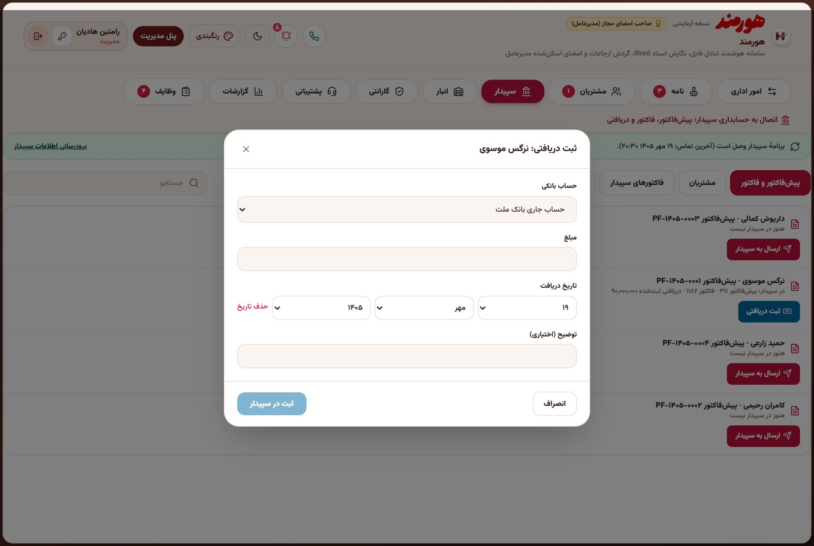
هر کار یک «درخواست» است: همکار دکمه را میزند، درخواست در صف میرود، برنامهٔ سپیدار (روی کامپیوتر سپیدار) آن را انجام میدهد و نتیجه به همان همکار برمیگردد. اگر خطایی باشد دلیلش به او اعلان میشود.
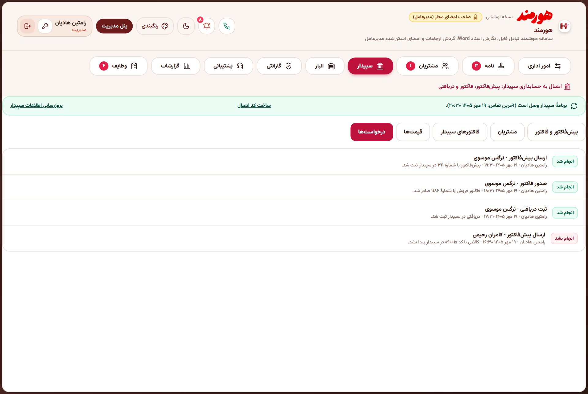
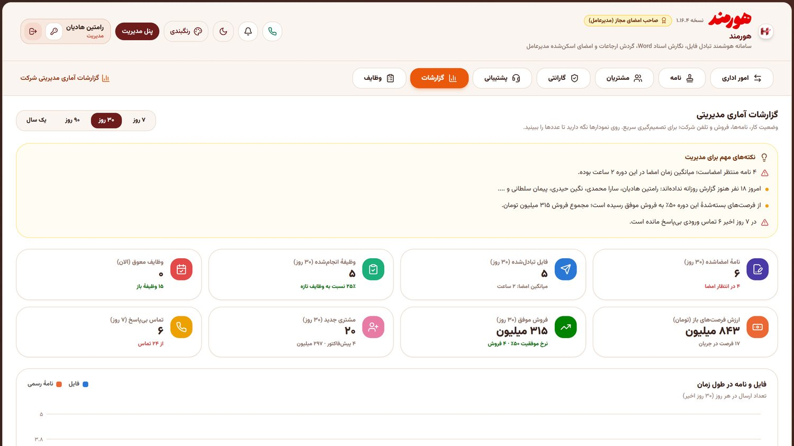
منوی «گزارشات» وضع شرکت را در بازهٔ ۷ روز، ۳۰ روز، ۹۰ روز یا یک سال نشان میدهد:
با دکمهٔ «پنل مدیریت» (بالای صفحه) وارد کنسول میشوید. ورود به آن امنیت بیشتری دارد: نام کاربری و رمز و کد تصویری (کپچا).

| زبانه | کار آن |
|---|---|
| کاربران و سهمیهها | افزودن و ویرایش کارمند، نقش، واحد، مجوزها، رمز و سقف فضا |
| واحدهای سازمانی | تعریف واحدها (مثلاً مالی، فروش) و سقف هر واحد |
| مانیتورینگ انتقالات | دیدن فایلهای فرستادهشده در سامانه |
| گزارشات ممیزی | ثبت اتفاقهای مهم (ورود، تغییر، حذف) برای بررسی |
| گزارشات آماری مدیریتی | همان گزارشات منوی «گزارشات» |
| آمار و مصرف حافظه | مصرف فضا و پایش شبکه (قطع و وصل اینترنت و بهروزرسانی) |
| تنظیمات پشتیبانی | ساخت پلنها، صفحهٔ مشتریان و تنظیمات پاسخ هوشمند |
| تنظیمات سیستم | هویت شرکت، سربرگ، پیامک، تلفن، پشتیبانگیری و مجوز |
در «کاربران و سهمیهها» زبانهٔ «جدول مجوزها» برای هر کارمند یک ردیف دارد و برای هر منو و زیرمنو یک ستون؛ با یک تیک مجوز همان لحظه داده یا گرفته میشود. در پنجرهٔ ویرایش کارمند فقط سوئیچ «مدیرعامل / صاحب امضا» مانده است و بقیهٔ مجوزها فقط از این جدول تعیین میشود.


| زبانه | چه چیزی را تنظیم میکند |
|---|---|
| نام و هویت سازمان | نام رسمی شرکت (در صفحهٔ ورود و هدر دیده میشود)، لوگو، آدرس و تلفن |
| نامهنگاری و شمارهگذاری | قالب شمارهٔ نامهها |
| مهر و امضا | تصویر مهر و امضای مدیرعامل |
| پیشفاکتور | اطلاعات فروشنده، شرایط و تأیید مدیرعامل |
| فونت و رنگ | فونت نامهها و رنگ ظاهر |
| فایلها و محدودیتها | سقف حجم و فضای ذخیرهسازی |
| ناتیفیکیشن و صدا | کدام اعلانها پاپآپ، صدا و اعلان گوشی داشته باشند |
| تلفن شرکت (ویپ) | وضعیت اتصال به ایزابل و ابزار «ثبت رویدادهای خام» برای عیبیابی |
| پیامک | اتصال به کاوهنگار، خط پایانی پیامک و پیامکهای خودکار |
| تلگرام و بله | اتصال به رباتها |
| پشتیبانگیری | نسخهٔ پشتیبان شبانه و بازیابی |
| مجوز و فعالسازی | مجوز استفاده از سامانه |

اتصال تلفنخانه را شرکت پشتیبان با «پنل نصب» انجام میدهد. وضعیت آن را در «تنظیمات سیستم ← تلفن شرکت (ویپ)» میبینید: «متصل» یا «تنظیم نشده». اگر پاپآپ نمیآید، دکمهٔ «ثبت رویدادهای خام (۶۰ ثانیه)» را بزنید، یک تماس آزمایشی بگیرید و خطوط را برای پشتیبان بفرستید.
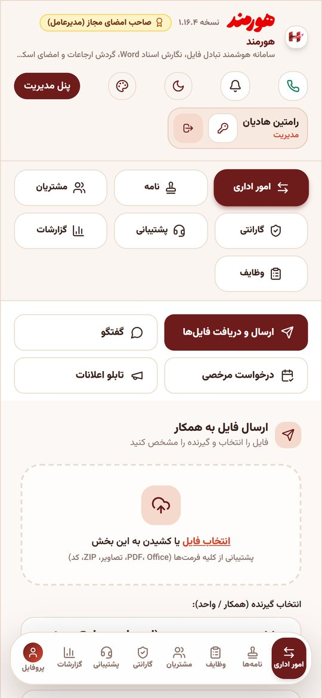
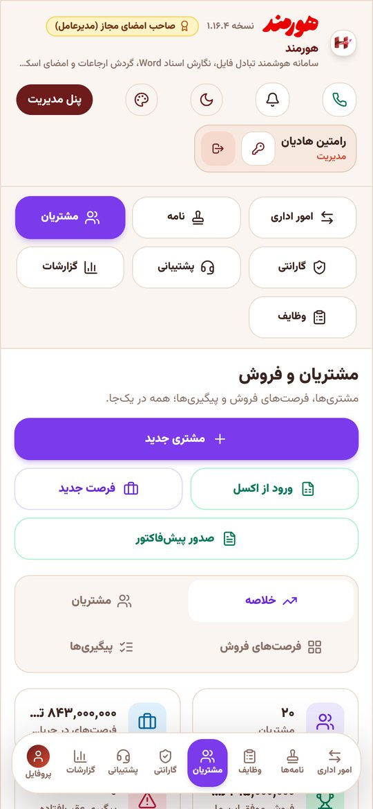
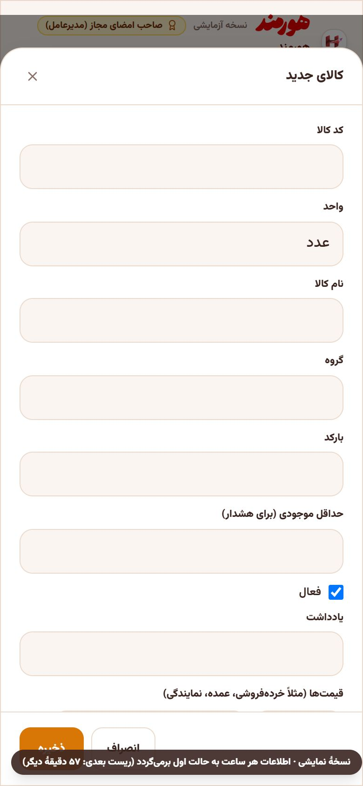
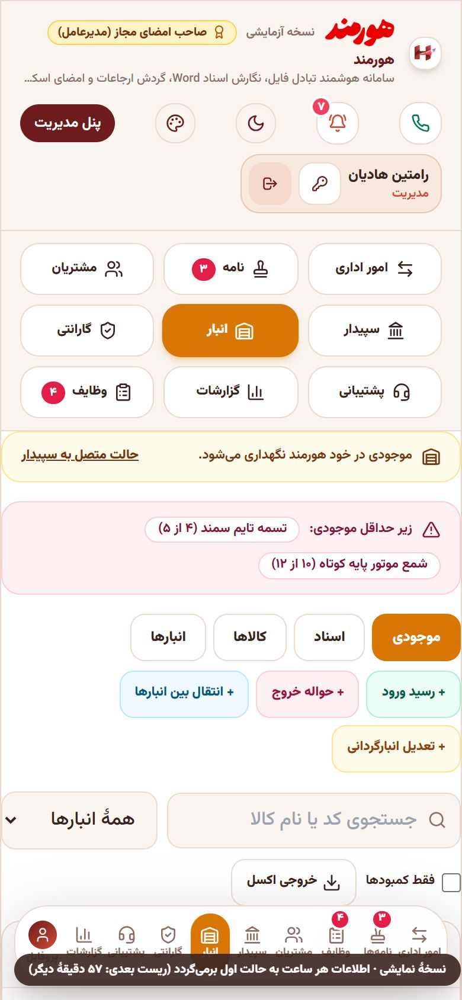
هر جا چیزی حذف شود (یا کاری برگشتناپذیر باشد)، پیش از انجام یک پنجرهٔ «آیا اطمینان دارید؟» با دکمههای «انصراف» و «بله، حذف شود» میآید. کلید Esc یا کلیک بیرون پنجره یعنی انصراف.
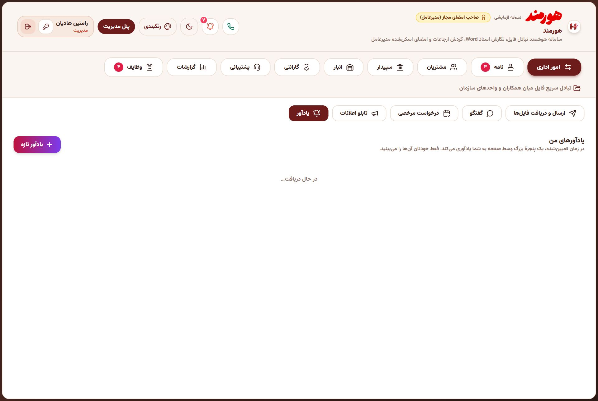
| مشکل | چه کنم |
|---|---|
| منویی را نمیبینم | دسترسی آن را مدیر باز میکند (کنسول ← کاربران و سهمیهها ← ویرایش) |
| پاپآپ تماس نمیآید | شمارهٔ داخلی من در فرم کاربر ثبت شده؟ وضعیت «تلفن شرکت (ویپ)» «متصل» است؟ اگر نه، به پشتیبان بگویید |
| پیامک نمیرسد | در «تنظیمات ← پیامک» کلید، شمارهٔ خط و فعالبودن را ببینید و ردیفهای «آخرین پیامکهای ارسالی» را نگاه کنید؛ دلیل خطا همانجا نوشته میشود |
| مشتری نمیتواند وارد صفحهٔ پشتیبانی شود | پلن او فعال است؟ موبایل او در پرونده ثبت است؟ کد ملی او وارد شده؟ (چهار رقم آخر) |
| سامانه کند یا قطع است | اول ببینید اینترنت دفتر درست است و از موبایل (دیتای دیگر) امتحان کنید. اگر فقط از بیرون قطع است، مشکل معمولاً از خط یا روتر است |
| فایل نمیفرستد | سقف فضای شما پر شده؛ فایلهای قدیمی را پاک کنید یا از مدیر سقف را بخواهید |
اگر مشکل حل نشد، توضیح کوتاه مشکل، ساعت وقوع و یک عکس از صفحه را برای پشتیبان بفرستید. بهخاطر امنیت، هیچوقت رمز عبور یا کلید API را برای کسی ارسال نکنید.